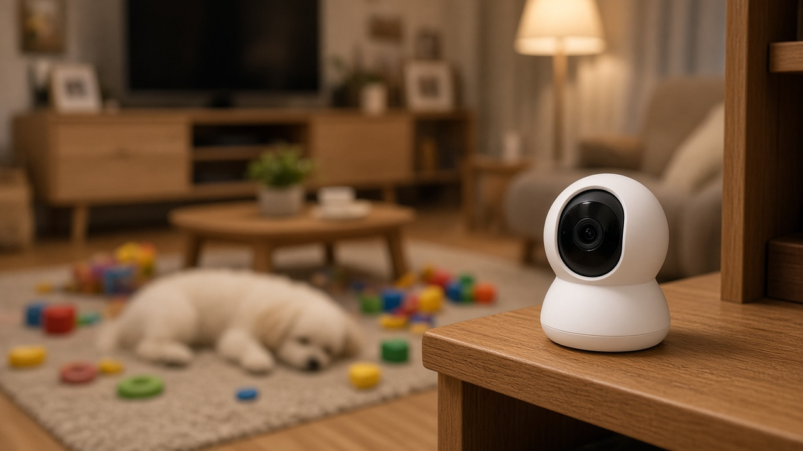
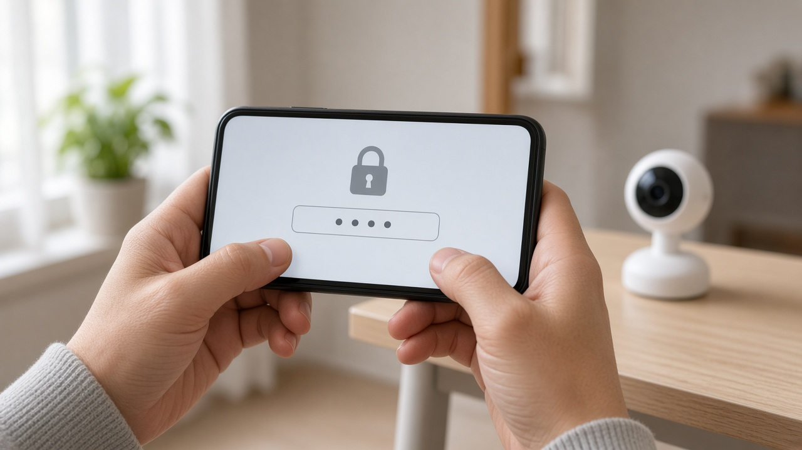
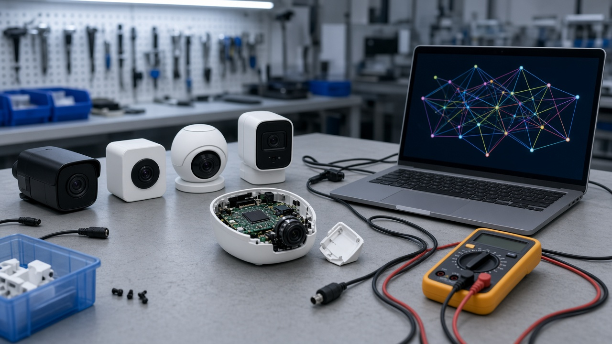

홈캠 10개 중 3개에서 남의 집 영상이 보였다, 지금 쓰는 카메라는 비밀번호와 업데이트부터

아이나 반려동물을 보려고 거실에 작은 카메라 하나 달아 둔 집이 많죠.
스마트폰 앱만 열면 집 안이 바로 보이니 편하지만, 그 화면을 나만 보고 있는지는 잘 생각해 보지 않게 돼요.
그런데 11월 12일 시중에서 많이 팔리는 홈캠 10개 제품을 점검했더니 3개 제품에서 다른 사람의 영상이나 사진을 볼 수 있는 허점이 확인됐다는 결과가 나왔어요.
어떤 문제가 있었는지, 내 카메라는 무엇을 확인하면 되는지 차례로 정리해 볼게요.
시중 홈캠 10개 점검, 3개 제품은 사용자 확인 절차가 허술했어요
한국소비자원과 한국인터넷진흥원이 온라인 쇼핑몰 판매 순위와 소비자 설문을 바탕으로 IP카메라 10개 제품을 골라 보안 점검을 했어요.
기기와 통신, 펌웨어, 스마트폰 앱, 제조사의 관리 정책까지 모두 37개 항목을 보안 전문 인력이 실제 공격 상황을 가정해 살폈어요.
그 결과 로보뷰, 브이스타캠, 파인뷰 3개 제품에서 사용자를 확인하는 절차가 미흡한 것으로 나타났어요.
로보뷰 제품은 다른 사람의 카메라 기능을 강제로 켤 수 있었고, 브이스타캠 제품은 다른 이용자의 사진을 열어 보고 내려받을 수 있었어요.
파인뷰 제품은 다른 이용자의 사진과 영상을 내려받는 것은 물론 카메라를 조작하는 것까지 가능했어요.
다만 과학기술정보통신부는 실제로 영상이 유출되거나 신고된 사례는 아직 발견되지 않았고, 미리 점검한 것이라고 설명했어요.

문제가 된 제품은 지금 어떻게 됐을까요
한국인터넷진흥원은 3개 제조사에 개선을 요청했고, 로보뷰와 파인뷰는 조치를 마친 것으로 확인됐어요.
보도에 따르면 두 회사는 이미 판매된 제품에도 스마트폰 앱 업데이트를 배포해 고쳤다고 해요.
브이스타캠은 다른 이용자의 사진을 빼낼 수 없도록 고치는 작업이 아직 진행 중이에요.
문제는 고치는 중인 제품도 판매는 그대로 이어지고 있다는 점이에요. 현재 과학기술정보통신부에는 취약점이 발견됐다는 이유만으로 판매를 멈추게 하거나 제재할 근거가 없다고 해요.
그래서 이 세 제품을 이미 쓰고 있다면 앱과 기기 업데이트가 최신인지 먼저 확인하고, 새로 살 계획이라면 개선이 끝났는지 판매처나 제조사 안내를 꼭 확인해 보세요.
세 제품만의 이야기가 아니에요, 10개 모두 손볼 곳이 있었어요
점검한 10개 제품 모두 기기를 움직이는 펌웨어의 보안 설정이 부족했어요.
8개 제품은 일부 통신에서 안전한 암호화 방식을 쓰지 않아, 주고받는 데이터가 새어 나갈 가능성이 있었어요.
4개 제품은 기기 안의 시험용 단자가 열린 채로 남아 있어 내부 시스템에 접근할 위험이 있었어요.
스마트폰 앱에서 안전한 비밀번호 규칙을 적용하지 않은 제품도 5개였어요. 여기서 안전한 규칙이란 영문 대문자와 소문자, 숫자, 특수문자 가운데 세 가지를 섞어 8자리 이상, 또는 두 가지를 섞어 10자리 이상으로 정하게 하는 기준을 말해요.
6개 제품은 제조사가 보안 업데이트를 언제까지 해 주는지 확인할 수 없었어요.
10개 제조사는 모두 한국소비자원에 개선 계획을 냈고, 한국인터넷진흥원이 실제로 지키는지 계속 확인할 예정이에요. 제품별 자세한 결과는 소비자24 누리집의 IP카메라 비교 정보에서 볼 수 있어요.

지금 쓰는 홈캠, 이것부터 바꾸세요
정부가 이번에 내놓은 사용자 보안 수칙의 핵심은 어렵지 않아요.
먼저 처음 설치할 때 들어 있는 기본 비밀번호는 바로 바꾸세요. 앞에서 말한 기준처럼 여러 종류의 글자를 섞어 길게 만드는 것이 좋아요.
다음은 업데이트예요. 제조사나 판매처가 안내하는 최신 보안 업데이트를 미루지 말고 적용하세요. 이번에 고쳐진 제품도 결국 앱과 기기를 업데이트해야 고친 내용이 반영돼요.
중고로 팔거나 버릴 때는 반드시 공장 초기화를 하세요. 내 계정과 저장된 영상 정보가 남은 채로 넘어가면 다음 사람이 볼 수도 있어요.
그리고 카메라를 둔 위치도 한 번 생각해 볼 만해요. 꼭 필요한 곳만 비추고, 안 쓸 때는 앱에서 꺼 두면 혹시 모를 노출 범위를 줄일 수 있어요.
정부는 점검을 넓히고 제도도 손볼 계획이에요
과학기술정보통신부는 지난해 로봇청소기에 이어 올해 IP카메라를 점검했고, 연내 주요 제조사와 유통사를 불러 보안 개선을 요구할 계획이에요.
제조사에는 설계 단계부터 불필요한 기능을 꺼 두고, 출시 뒤에도 취약점을 관리하며 보안 업데이트를 제공하라고 권고했어요.
최근 유럽에서 냉장 냉동 설비 제어 장치가 해킹돼 매장 700여 곳의 식료품이 폐기되는 일이 있었는데, 정부는 이런 사고도 고도의 기술보다 기본 수칙을 지키지 않은 데서 시작됐다고 봤어요.
사물인터넷 제품을 더 적극적으로 점검할 수 있도록 제도 개선도 준비 중이라고 밝혔어요.
정리하면, 문제가 된 세 제품은 업데이트 여부를 꼭 확인하고, 어떤 홈캠이든 기본 비밀번호 변경과 업데이트, 처분할 때 초기화 이 세 가지만은 챙겨 두세요.
참고 자료 과학기술정보통신부 2026년 11월 12일 보도자료 사물인터넷 제품 제조사의 적극적 보안 강화와 소비자의 보안 수칙 실천이 필요, 한국소비자원과 한국인터넷진흥원 IP카메라 품질 보안성 비교 결과 소비자24, 연합뉴스와 뉴시스 2026년 11월 12일 보도 www.consumer.go.kr
태그 홈캠 IP카메라 홈카메라보안 홈캠해킹 사생활보호 카메라비밀번호 보안업데이트 사물인터넷보안 한국인터넷진흥원 소비자24